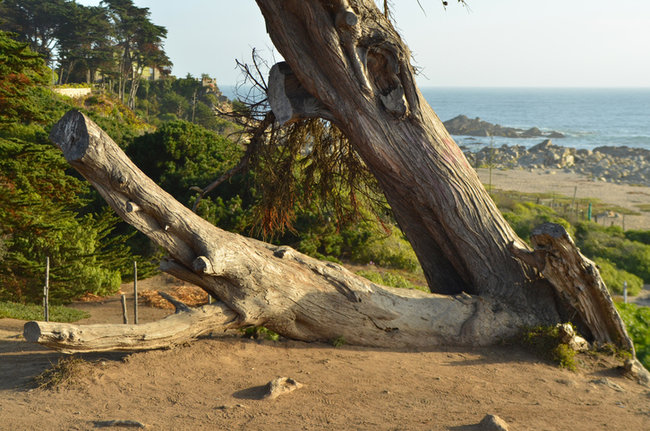
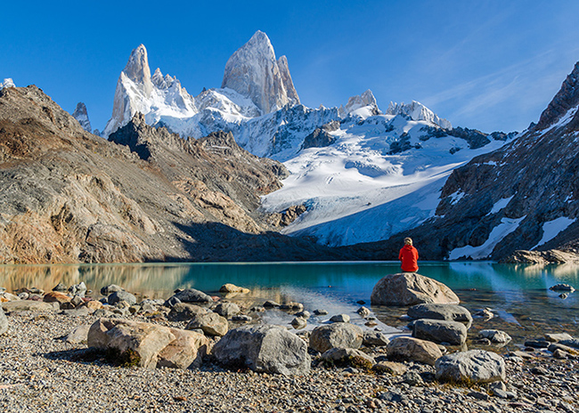
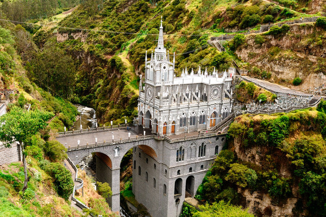

Turismo na América do Sul
Sugestões de lugares para conhecer no continente da América do Sul
Essa é para os fãs do poeta Pablo Neruda. É na comuna de El Quisco, província de San Antonio, que fica a Casa Museo Isla Negra, um dos locais onde o poeta morou e que possui um dos mais ricos acervos sobre ele. Foi lá que ele passou grande parte do seu tempo e onde está enterrado junto com sua última amada, Matilde.(Isla Negra)

No extremo sul argentino, o simpático vilarejo de El Calafate guarda paisagens naturais encantadoras. Localizado na província de Santa Cruz, o município é o ponto de partida para visitar o renomado Parque Nacional Los Glaciares. É lá que está o glaciar Perito Moreno, a maior geleira em extensão horizontal do mundo, considerada Patrimônio Natural da Humanidade pela UNESCO.(El Calafate)

O que era um local de culto e peregrinação acabou se transformando em uma das principais atrações turísticas da América do Sul. O Santuário de Las Lajas, no sul da Colômbia, é dono de um cenário de extrema beleza, seja por sua construção, seja pelo cenário natural onde está inserido.(Las Lajas)
